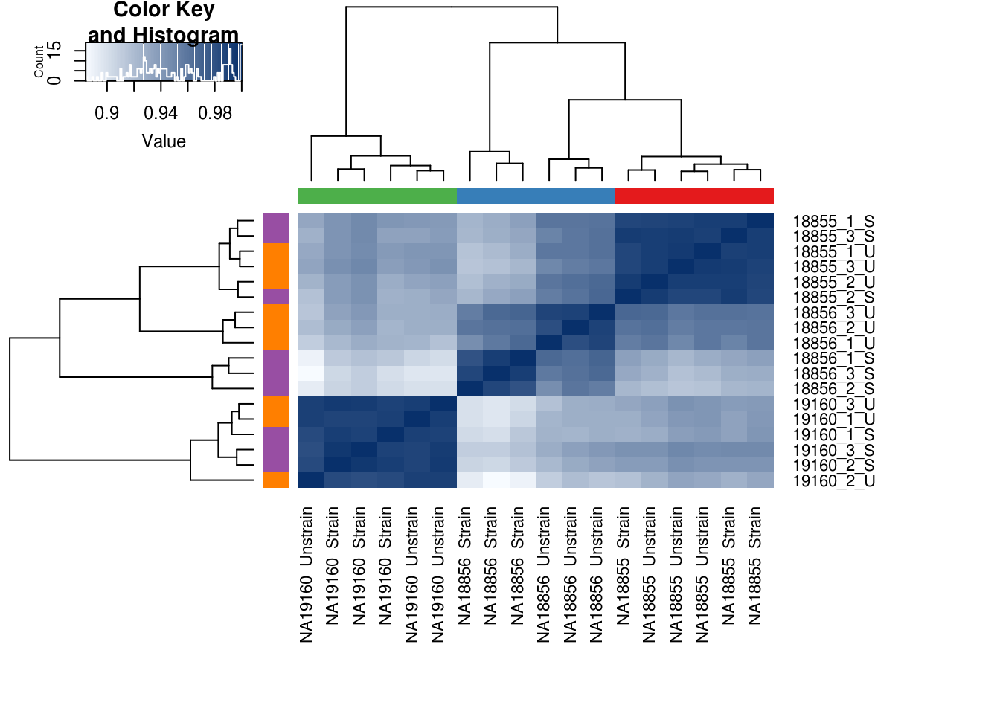
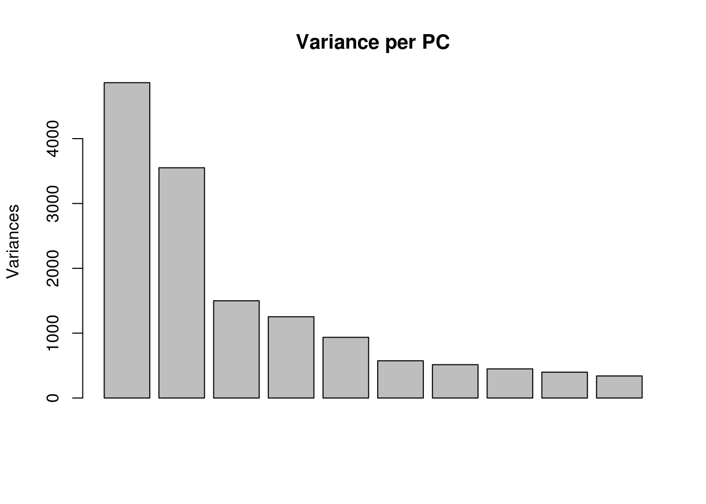
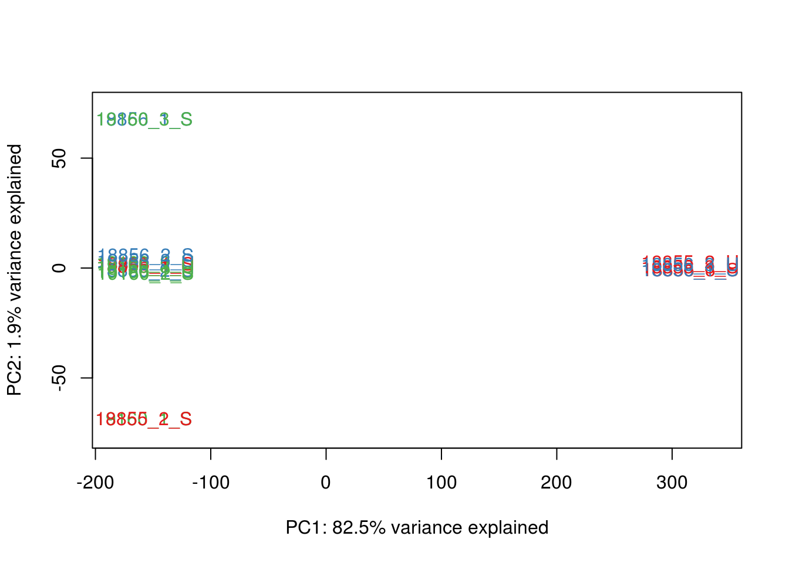
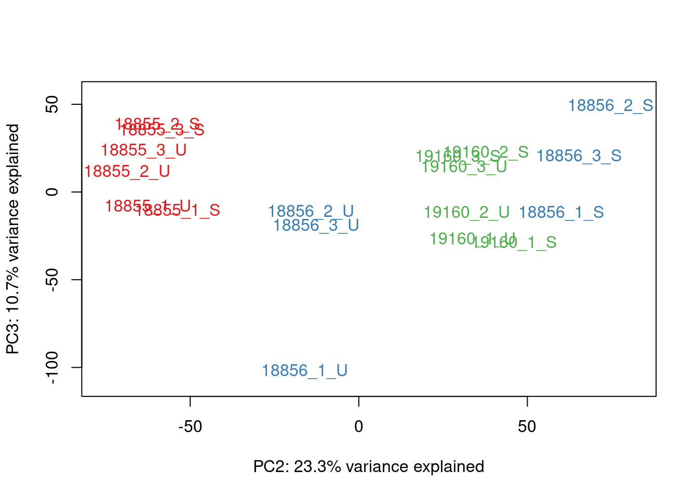
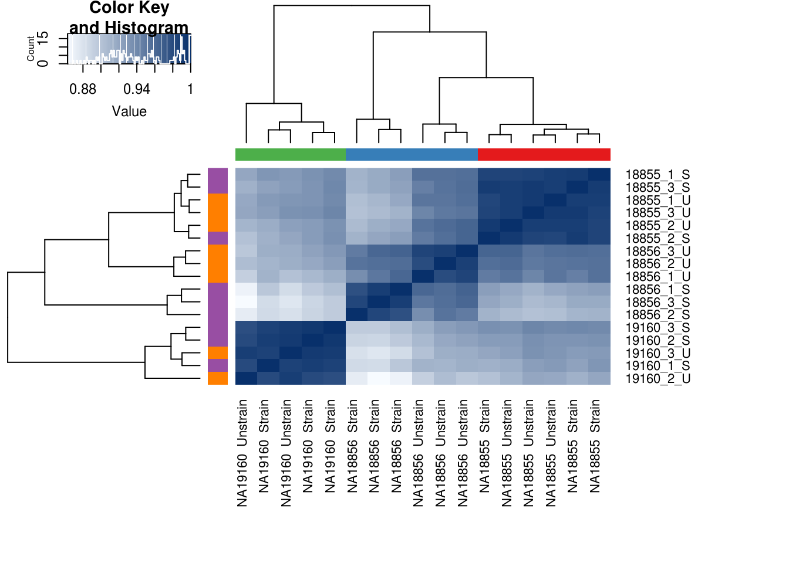
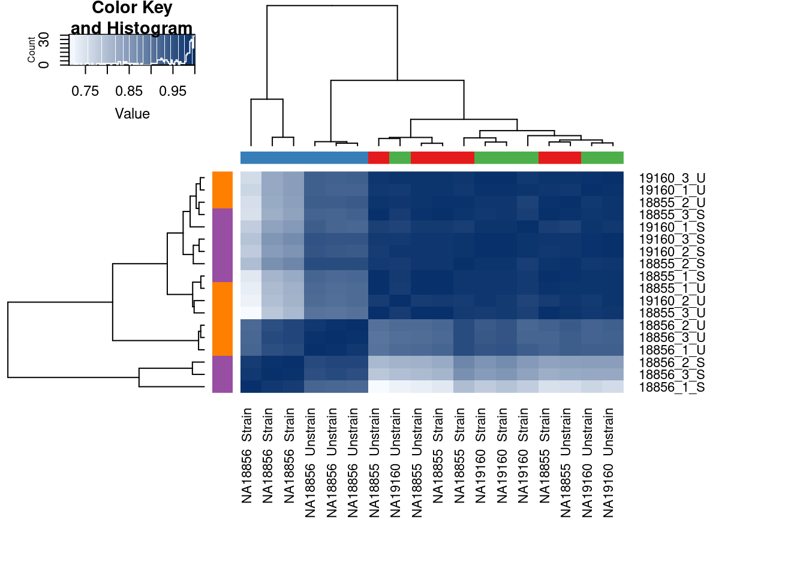
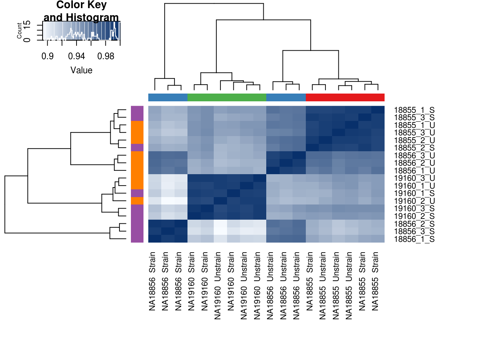
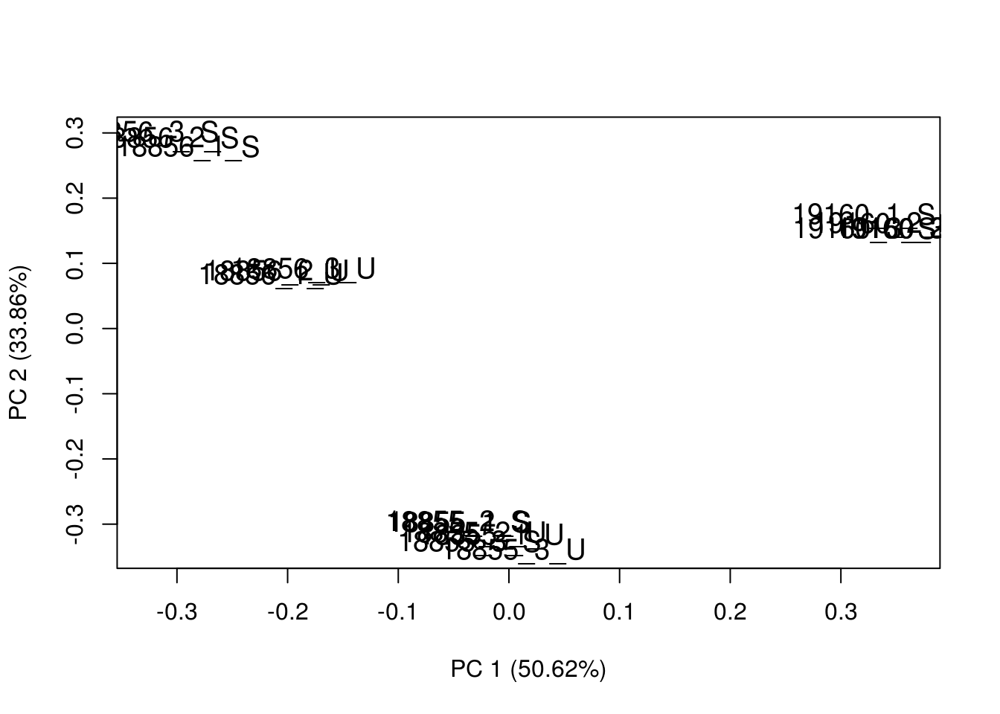

Analysis of Technical factors
Anthony Hung
2019-12-16
Last updated: 2020-01-15
Checks: 6 1
Knit directory: OAStrain/
This reproducible R Markdown analysis was created with workflowr (version 1.5.0). The Checks tab describes the reproducibility checks that were applied when the results were created. The Past versions tab lists the development history.
The R Markdown file has unstaged changes. To know which version of the R Markdown file created these results, you’ll want to first commit it to the Git repo. If you’re still working on the analysis, you can ignore this warning. When you’re finished, you can run wflow_publish to commit the R Markdown file and build the HTML.
Great job! The global environment was empty. Objects defined in the global environment can affect the analysis in your R Markdown file in unknown ways. For reproduciblity it’s best to always run the code in an empty environment.
The command set.seed(20191127) was run prior to running the code in the R Markdown file. Setting a seed ensures that any results that rely on randomness, e.g. subsampling or permutations, are reproducible.
Great job! Recording the operating system, R version, and package versions is critical for reproducibility.
Nice! There were no cached chunks for this analysis, so you can be confident that you successfully produced the results during this run.
Great job! Using relative paths to the files within your workflowr project makes it easier to run your code on other machines.
Great! You are using Git for version control. Tracking code development and connecting the code version to the results is critical for reproducibility. The version displayed above was the version of the Git repository at the time these results were generated.
Note that you need to be careful to ensure that all relevant files for the analysis have been committed to Git prior to generating the results (you can use wflow_publish or wflow_git_commit). workflowr only checks the R Markdown file, but you know if there are other scripts or data files that it depends on. Below is the status of the Git repository when the results were generated:
Ignored files:
Ignored: .RData
Ignored: .Rhistory
Ignored: .Rproj.user/
Ignored: analysis/figure/
Ignored: data/RUVsCPM.rds
Ignored: data/filtered_counts.rds
Ignored: data/norm_filtered_counts.rds
Ignored: data/prime_RUVsCPM.rds
Ignored: data/prime_filtered_counts.rds
Ignored: data/prime_norm_filtered_counts.rds
Ignored: data/prime_raw_counts_relabeled.rds
Ignored: data/raw_counts_relabeled.rds
Unstaged changes:
Modified: analysis/Norm_filter.Rmd
Modified: analysis/technical_factors_analysis.Rmd
Note that any generated files, e.g. HTML, png, CSS, etc., are not included in this status report because it is ok for generated content to have uncommitted changes.
These are the previous versions of the R Markdown and HTML files. If you’ve configured a remote Git repository (see ?wflow_git_remote), click on the hyperlinks in the table below to view them.
| File | Version | Author | Date | Message |
|---|---|---|---|---|
| html | 00a66fb | Anthony Hung | 2020-01-13 | run GO enrichment analysis |
| html | 5eb29e8 | Anthony Hung | 2020-01-13 | Knit analysis files |
| html | f1425df | Anthony Hung | 2020-01-13 | Correct CPM Cutoff strategy |
| Rmd | bd0e9ca | Anthony Hung | 2020-01-11 | Re-run analyses with real data |
| html | bd0e9ca | Anthony Hung | 2020-01-11 | Re-run analyses with real data |
| Rmd | b7948f0 | Anthony Hung | 2020-01-06 | DE analysis design matrix |
| html | 11d20cf | Anthony Hung | 2019-12-17 | Build site. |
| Rmd | 8a22392 | Anthony Hung | 2019-12-17 | wflow_publish(files = c(“analysis/preprocessing.Rmd”, |
| Rmd | a5c9482 | Anthony Hung | 2019-12-16 | run through with dummy data |
| Rmd | bb98d14 | Anthony Hung | 2019-12-16 | Add sampleinfo file |
| Rmd | c1f7cf7 | Anthony Hung | 2019-12-16 | Start up additional analysis files |
| Rmd | a8cef1a | Anthony Hung | 2019-12-16 | Create analysis files for analysis of BulkRNA pilot data |
Examine normalized/filtered data and see if any PCs correlate with technical factors
library("gplots")
Attaching package: 'gplots'The following object is masked from 'package:stats':
lowesslibrary("ggplot2")
library("reshape")
library("edgeR")Loading required package: limmalibrary("RColorBrewer")
library("scales")
library("cowplot")
********************************************************Note: As of version 1.0.0, cowplot does not change the default ggplot2 theme anymore. To recover the previous behavior, execute:
theme_set(theme_cowplot())********************************************************
Attaching package: 'cowplot'The following object is masked from 'package:reshape':
stamplibrary("DT")
library("tidyr")
Attaching package: 'tidyr'The following objects are masked from 'package:reshape':
expand, smithslibrary("RUVSeq")Loading required package: BiobaseLoading required package: BiocGenericsLoading required package: parallel
Attaching package: 'BiocGenerics'The following objects are masked from 'package:parallel':
clusterApply, clusterApplyLB, clusterCall, clusterEvalQ,
clusterExport, clusterMap, parApply, parCapply, parLapply,
parLapplyLB, parRapply, parSapply, parSapplyLBThe following object is masked from 'package:limma':
plotMAThe following objects are masked from 'package:stats':
IQR, mad, sd, var, xtabsThe following objects are masked from 'package:base':
anyDuplicated, append, as.data.frame, basename, cbind, colnames,
dirname, do.call, duplicated, eval, evalq, Filter, Find, get, grep,
grepl, intersect, is.unsorted, lapply, Map, mapply, match, mget,
order, paste, pmax, pmax.int, pmin, pmin.int, Position, rank,
rbind, Reduce, rownames, sapply, setdiff, sort, table, tapply,
union, unique, unsplit, which, which.max, which.minWelcome to Bioconductor
Vignettes contain introductory material; view with
'browseVignettes()'. To cite Bioconductor, see
'citation("Biobase")', and for packages 'citation("pkgname")'.Loading required package: EDASeqLoading required package: ShortReadLoading required package: BiocParallelLoading required package: BiostringsLoading required package: S4VectorsLoading required package: stats4
Attaching package: 'S4Vectors'The following object is masked from 'package:tidyr':
expandThe following objects are masked from 'package:reshape':
expand, renameThe following object is masked from 'package:gplots':
spaceThe following object is masked from 'package:base':
expand.gridLoading required package: IRangesLoading required package: XVector
Attaching package: 'Biostrings'The following object is masked from 'package:base':
strsplitLoading required package: RsamtoolsLoading required package: GenomeInfoDbLoading required package: GenomicRangesLoading required package: GenomicAlignmentsLoading required package: SummarizedExperimentLoading required package: DelayedArrayLoading required package: matrixStats
Attaching package: 'matrixStats'The following objects are masked from 'package:Biobase':
anyMissing, rowMedians
Attaching package: 'DelayedArray'The following objects are masked from 'package:matrixStats':
colMaxs, colMins, colRanges, rowMaxs, rowMins, rowRangesThe following object is masked from 'package:Biostrings':
typeThe following objects are masked from 'package:base':
aperm, apply, rowsumlibrary("dplyr")
Attaching package: 'dplyr'The following object is masked from 'package:ShortRead':
idThe following objects are masked from 'package:GenomicAlignments':
first, lastThe following object is masked from 'package:matrixStats':
countThe following objects are masked from 'package:GenomicRanges':
intersect, setdiff, unionThe following object is masked from 'package:GenomeInfoDb':
intersectThe following objects are masked from 'package:Biostrings':
collapse, intersect, setdiff, setequal, unionThe following object is masked from 'package:XVector':
sliceThe following objects are masked from 'package:IRanges':
collapse, desc, intersect, setdiff, slice, unionThe following objects are masked from 'package:S4Vectors':
first, intersect, rename, setdiff, setequal, unionThe following object is masked from 'package:Biobase':
combineThe following objects are masked from 'package:BiocGenerics':
combine, intersect, setdiff, unionThe following object is masked from 'package:reshape':
renameThe following objects are masked from 'package:stats':
filter, lagThe following objects are masked from 'package:base':
intersect, setdiff, setequal, union# Load colors
colors <- colorRampPalette(c(brewer.pal(9, "Blues")[1],brewer.pal(9, "Blues")[9]))(100)
pal <- c(brewer.pal(9, "Set1"), brewer.pal(8, "Set2"), brewer.pal(12, "Set3"))
#load in normalized/filtered data
filt_cpm <- readRDS("data/norm_filtered_counts.rds")
#load in filtered counts
filt_counts <- readRDS("data/filtered_counts.rds")
# load in reordered sample information
sampleinfo <- readRDS("data/Sample.info.RNAseq.reordered.csv")PCA and hierarchical clustering of normalized and filtered data
#Load PCA plotting Function
source("code/PCA_fn.R")
# Clustering (original code from Julien Roux)
cors <- cor(filt_cpm, method="spearman", use="pairwise.complete.obs")
labels <- paste(sampleinfo$Individual, sampleinfo$treatment, sep=" ")
heatmap.2( cors, scale="none", col = colors, margins = c(12, 12), trace='none', denscol="white", labCol=labels, ColSideColors=pal[as.integer(as.factor(sampleinfo$Individual))], RowSideColors=pal[as.integer(as.factor(sampleinfo$treatment))+3], cexCol = 0.2 + 1/log10(15), cexRow = 0.2 + 1/log10(15))
#Perform PCA and color by factors to look for any potential correlations
# Perform PCA
pca_genes <- prcomp(t(filt_cpm), scale = T)
scores <- pca_genes$x
variances <- pca_genes$sdev^2
explained <- variances / sum(variances)
plot(pca_genes, main = "Variance per PC")
#Make PCA plots with the factors colored by Individual
### PCs 1 and 2 norm+filt Data
for (n in 1:1){
col.v <- pal[as.integer(sampleinfo$Individual)]
plot_scores(pca_genes, scores, n, n+1, col.v)
}
### PCs 3 and 4 norm+filt Data
for (n in 3:3){
col.v <- pal[as.integer(sampleinfo$Individual)]
plot_scores(pca_genes, scores, n, n+1, col.v)
}
Check that technical factors do not correlate with PCs
# Calculate the relationship between each recorded covariate and the top 6 PCs.
p_comps <- 1:6
info <- sampleinfo %>%
dplyr::select(c(Individual, Sex, Replicate, Passage_MSC, treatment, RIN, LibraryPrepBatch)) #subset sample info for technical/biological variables
#Calculate correlations
pc_cov_cor <- matrix(nrow = ncol(info), ncol = length(p_comps),
dimnames = list(colnames(info), colnames(pca_genes$x)[p_comps]))
for (pc in p_comps) {
for (covariate in 1:ncol(info)) {
lm_result <- lm(pca_genes$x[, pc] ~ info[, covariate])
r2 <- summary(lm_result)$r.squared
pc_cov_cor[covariate, pc] <- r2
}
}
datatable(pc_cov_cor) #Convert to long format to plot in ggplot2
pc_cov_cor_2 <- as.data.frame(pc_cov_cor)
pc_cov_cor_2$variable <- rownames(pc_cov_cor)
pc_cov_cor_2 <- gather(pc_cov_cor_2, key = "pc", value = "cor", -variable)
head(pc_cov_cor_2) variable pc cor
1 Individual PC1 0.83614362
2 Sex PC1 0.13598782
3 Replicate PC1 0.01333893
4 Passage_MSC PC1 0.22261037
5 treatment PC1 0.07852037
6 RIN PC1 0.00000000#Plot heatmap
d_heatmap <- pc_cov_cor_2
d_heatmap$variable <- factor(d_heatmap$variable,
levels = c("Individual", "Sex", "Replicate",
"Passage_MSC", "treatment", "RIN", "LibraryPrepBatch"),
labels = c("Individual", "Sex", "Replicate",
"Passage_MSC", "treatment", "RIN", "LibraryPrepBatch"))
pca_heat <- ggplot(d_heatmap, aes(x = pc, y = variable)) +
geom_tile(aes(fill = cor), colour = "white") +
scale_fill_gradient(low = "white", high = "red", limits = c(0, 1)) +
labs(x = "Principal Component", y = "",
title = "Correlation between principal components and experimental variables")
pca_heat
Remove unwanted variation using RUVSeq
#The RUVSeq vignette loads raw counts and uses the RUVSeq package to filter and normalize data (upper quantile normalization) before performing RUVs.
#Use RUVs (replicates) and adjust k until corr heatmap looks right
replicates <- makeGroups(paste0(sampleinfo$Individual, sampleinfo$treatment))
x <- paste0(sampleinfo$Individual, sampleinfo$treatment)
#load data into expressionset
set <- newSeqExpressionSet(as.matrix(filt_counts),
phenoData = data.frame(sampleinfo, row.names=colnames(filt_cpm)))
setSeqExpressionSet (storageMode: lockedEnvironment)
assayData: 11741 features, 17 samples
element names: counts, normalizedCounts, offset
protocolData: none
phenoData
sampleNames: 18855_3_S 19160_3_S ... 18855_3_U (17 total)
varLabels: Sample_ID Individual ... LibraryPrepBatch (8 total)
varMetadata: labelDescription
featureData: none
experimentData: use 'experimentData(object)'
Annotation: #normalization
set <- betweenLaneNormalization(set, which="upper")
set1 <- RUVs(set, rownames(filt_counts), k=1, replicates)
pData(set1) Sample_ID Individual Sex Replicate Passage_MSC treatment RIN
18855_3_S 18855_3_S NA18855 F 3 11 Strain 1
19160_3_S 19160_3_S NA19160 M 3 9 Strain 1
18856_3_U 18856_3_U NA18856 M 3 8 Unstrain 1
18856_1_U 18856_1_U NA18856 M 1 8 Unstrain 1
18855_2_S 18855_2_S NA18855 F 2 10 Strain 1
18856_2_S 18856_2_S NA18856 M 2 8 Strain 1
19160_3_U 19160_3_U NA19160 M 3 9 Unstrain 1
18855_2_U 18855_2_U NA18855 F 2 10 Unstrain 1
19160_2_S 19160_2_S NA19160 M 2 8 Strain 1
18855_1_S 18855_1_S NA18855 F 1 10 Strain 1
18856_1_S 18856_1_S NA18856 M 1 8 Strain 1
19160_1_S 19160_1_S NA19160 M 1 8 Strain 1
19160_2_U 19160_2_U NA19160 M 2 8 Unstrain 1
18855_1_U 18855_1_U NA18855 F 1 10 Unstrain 1
18856_3_S 18856_3_S NA18856 M 3 8 Strain 1
18856_2_U 18856_2_U NA18856 M 2 8 Unstrain 1
18855_3_U 18855_3_U NA18855 F 3 11 Unstrain 1
LibraryPrepBatch W_1
18855_3_S 2 -0.38594438
19160_3_S 2 -0.57009360
18856_3_U 2 0.03782321
18856_1_U 1 -0.01549399
18855_2_S 1 -0.04897027
18856_2_S 1 -0.96788704
19160_3_U 2 -0.76382812
18855_2_U 1 -0.17662302
19160_2_S 1 -0.69451686
18855_1_S 1 -0.48506476
18856_1_S 1 0.04037142
19160_1_S 1 -0.77926605
19160_2_U 1 -1.10781760
18855_1_U 1 -0.41892411
18856_3_S 2 -0.09468533
18856_2_U 1 -0.47805742
18855_3_U 2 -0.49041767#Plots after correcting RUV
plotRLE(set1, outline=FALSE, ylim=c(-4, 4), col=colors[x])
plotPCA(set1, col=colors[x], cex=1.2)
#Spearman
cors <- cor(set1@assayData$normalizedCounts, method="spearman", use="pairwise.complete.obs")
labels <- paste(sampleinfo$Individual, sampleinfo$treatment, sep=" ")
heatmap.2( cors, scale="none", col = colors, margins = c(12, 12), trace='none', denscol="white", labCol=labels, ColSideColors=pal[as.integer(as.factor(sampleinfo$Individual))], RowSideColors=pal[as.integer(as.factor(sampleinfo$treatment))+3], cexCol = 0.2 + 1/log10(15), cexRow = 0.2 + 1/log10(15))
#Pearson
cors <- cor(set1@assayData$normalizedCounts, method="pearson", use="pairwise.complete.obs")
labels <- paste(sampleinfo$Individual, sampleinfo$treatment, sep=" ")
heatmap.2( cors, scale="none", col = colors, margins = c(12, 12), trace='none', denscol="white", labCol=labels, ColSideColors=pal[as.integer(as.factor(sampleinfo$Individual))], RowSideColors=pal[as.integer(as.factor(sampleinfo$treatment))+3], cexCol = 0.2 + 1/log10(15), cexRow = 0.2 + 1/log10(15))
“The RUVg function returns two pieces of information: the estimated factors of unwanted variation (added as columns to the phenoData slot of set) and the normalized counts obtained by regressing the original counts on the unwanted factors. The normalized values are stored in the normalizedCounts slot of set and can be accessed with the normCounts method. These counts should be used only for exploration. It is important that subsequent DE analysis be done on the original counts (accessible through the counts method), as removing the unwanted factors from the counts can also remove part of a factor of interest [6].”
Save data and RUVs output for unwanted variation (contains the same cpm data as before as well as pheno data, W_1 values from RUVs)
saveRDS(set1, "data/RUVsCPM.rds")
sessionInfo()R version 3.6.1 (2019-07-05)
Platform: x86_64-apple-darwin15.6.0 (64-bit)
Running under: macOS Mojave 10.14.6
Matrix products: default
BLAS: /Library/Frameworks/R.framework/Versions/3.6/Resources/lib/libRblas.0.dylib
LAPACK: /Library/Frameworks/R.framework/Versions/3.6/Resources/lib/libRlapack.dylib
locale:
[1] en_US.UTF-8/en_US.UTF-8/en_US.UTF-8/C/en_US.UTF-8/en_US.UTF-8
attached base packages:
[1] stats4 parallel stats graphics grDevices utils datasets
[8] methods base
other attached packages:
[1] dplyr_0.8.3 RUVSeq_1.18.0
[3] EDASeq_2.18.0 ShortRead_1.42.0
[5] GenomicAlignments_1.20.1 SummarizedExperiment_1.14.1
[7] DelayedArray_0.10.0 matrixStats_0.55.0
[9] Rsamtools_2.0.3 GenomicRanges_1.36.1
[11] GenomeInfoDb_1.20.0 Biostrings_2.52.0
[13] XVector_0.24.0 IRanges_2.18.3
[15] S4Vectors_0.22.1 BiocParallel_1.18.1
[17] Biobase_2.44.0 BiocGenerics_0.30.0
[19] tidyr_1.0.0 DT_0.10
[21] cowplot_1.0.0 scales_1.1.0
[23] RColorBrewer_1.1-2 edgeR_3.26.8
[25] limma_3.40.6 reshape_0.8.8
[27] ggplot2_3.2.1 gplots_3.0.1.1
loaded via a namespace (and not attached):
[1] colorspace_1.4-1 hwriter_1.3.2 ellipsis_0.3.0
[4] rprojroot_1.3-2 fs_1.3.1 farver_2.0.1
[7] bit64_0.9-7 AnnotationDbi_1.46.1 splines_3.6.1
[10] R.methodsS3_1.7.1 DESeq_1.36.0 geneplotter_1.62.0
[13] knitr_1.26 zeallot_0.1.0 jsonlite_1.6
[16] workflowr_1.5.0 annotate_1.62.0 R.oo_1.23.0
[19] shiny_1.4.0 compiler_3.6.1 httr_1.4.1
[22] backports_1.1.5 assertthat_0.2.1 Matrix_1.2-18
[25] fastmap_1.0.1 lazyeval_0.2.2 later_1.0.0
[28] htmltools_0.4.0 prettyunits_1.0.2 tools_3.6.1
[31] gtable_0.3.0 glue_1.3.1 GenomeInfoDbData_1.2.1
[34] Rcpp_1.0.3 vctrs_0.2.0 gdata_2.18.0
[37] rtracklayer_1.44.4 crosstalk_1.0.0 xfun_0.11
[40] stringr_1.4.0 mime_0.7 lifecycle_0.1.0
[43] gtools_3.8.1 XML_3.98-1.20 zlibbioc_1.30.0
[46] MASS_7.3-51.4 aroma.light_3.14.0 hms_0.5.2
[49] promises_1.1.0 yaml_2.2.0 memoise_1.1.0
[52] biomaRt_2.40.5 latticeExtra_0.6-28 stringi_1.4.3
[55] RSQLite_2.1.4 genefilter_1.66.0 GenomicFeatures_1.36.4
[58] caTools_1.17.1.3 rlang_0.4.2 pkgconfig_2.0.3
[61] bitops_1.0-6 evaluate_0.14 lattice_0.20-38
[64] purrr_0.3.3 labeling_0.3 htmlwidgets_1.5.1
[67] bit_1.1-14 tidyselect_0.2.5 plyr_1.8.5
[70] magrittr_1.5 R6_2.4.1 DBI_1.0.0
[73] pillar_1.4.2 whisker_0.4 withr_2.1.2
[76] survival_3.1-8 RCurl_1.95-4.12 tibble_2.1.3
[79] crayon_1.3.4 KernSmooth_2.23-16 rmarkdown_1.18
[82] progress_1.2.2 locfit_1.5-9.1 grid_3.6.1
[85] blob_1.2.0 git2r_0.26.1 digest_0.6.23
[88] xtable_1.8-4 httpuv_1.5.2 R.utils_2.9.2
[91] munsell_0.5.0